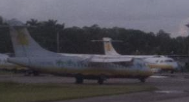
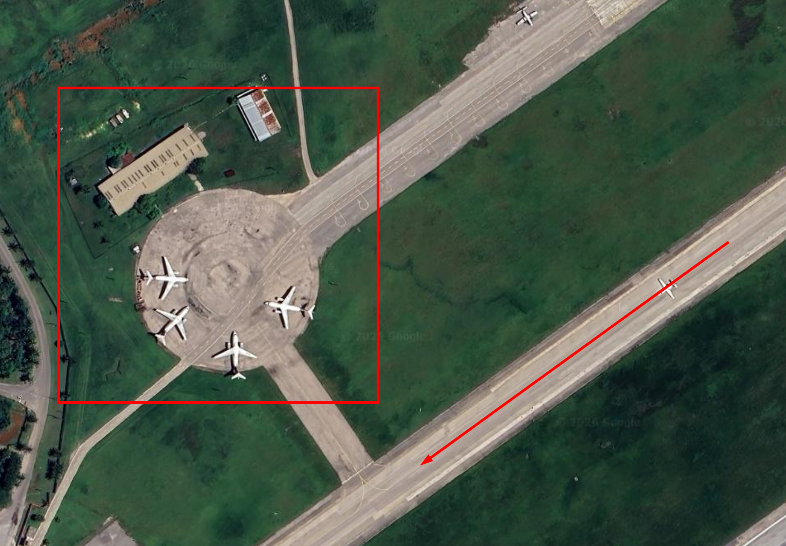
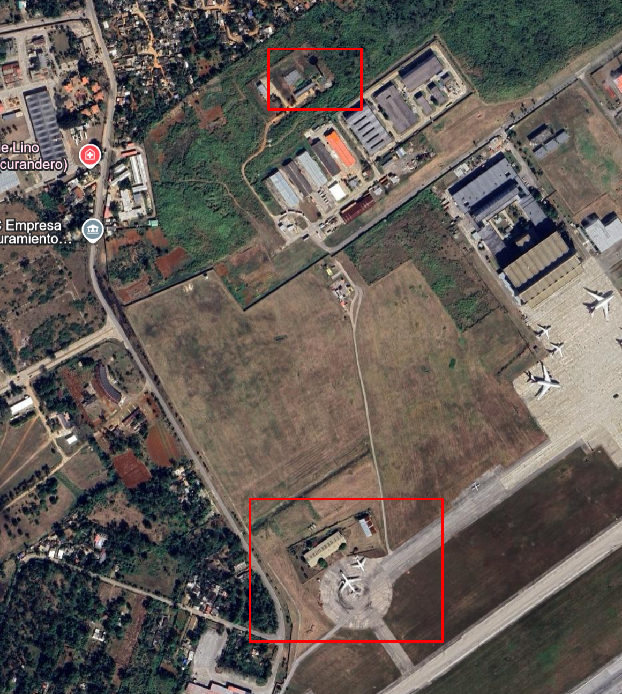
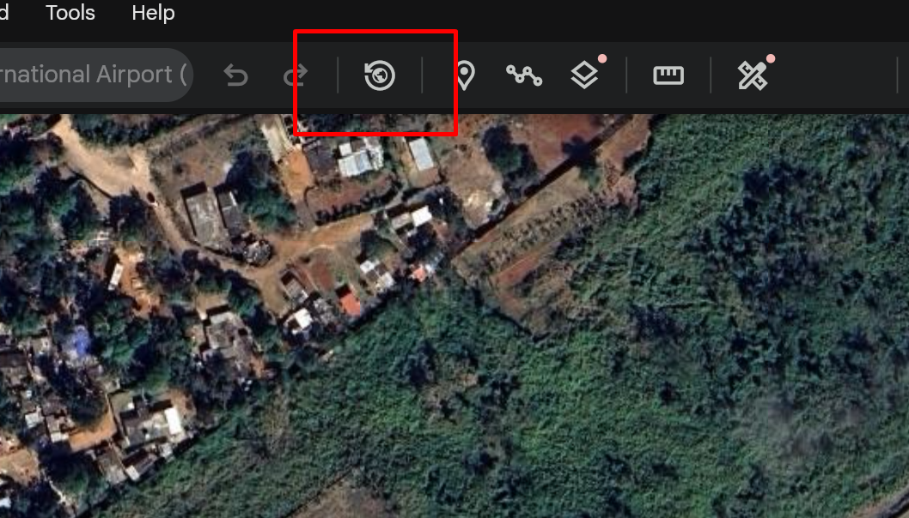
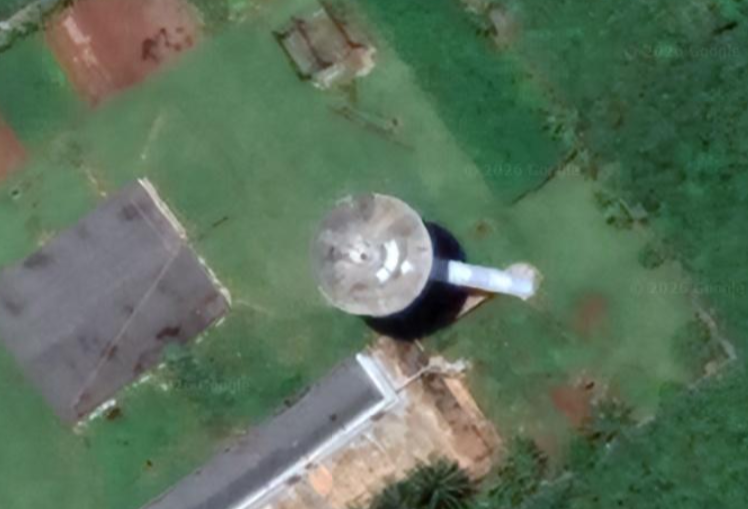

Field Note № 003 — Geolocation OSINT
Touching Tarmac
A taxiing photo, an airline and one airport in the Caribbean.
Bellingcat's brief was short: they're waiting in the wings. While taxiing I took this photo of several aircraft, one looking particularly worse for wear. What is the ICAO code of this airport? One photo. No metadata.
This writeup contains the solution. If you want to try the challenge yourself first, it is available at challenge.bellingcat.com.
Reading the livery
When you are given a photo with aircraft in it, the first thing to do is read the planes themselves. The markings narrow the world faster than the ground will.
I cropped tight on the closest aircraft and ran a reverse image search. The white fuselage with a yellow accent matched Aero Caribbean, a now-defunct Cuban regional carrier. The Wikipedia entry for the airlines of Cuba confirmed it.

Knowing the airline cuts the search down hard. Aero Caribbean only flew a small set of routes, domestic Cuba plus a handful of Caribbean and Latin American stops.
From hub to apron
The simplest way to work through that list is to start where the airline flies most. A search for Aero Caribbean main hub pointed straight at José Martí International Airport (HAV) in Havana. So I started there.
Before opening the satellite view, I went back to the photo and wrote down what should be visible from above. This is the part of the work I always find most useful — turning a ground-level photo into a checklist of overhead features.
- Aircraft parked facing each other, in a radial arrangement instead of the usual nose-out parallel rows.
- A grass strip with a sharp, geometric corner, instead of the rounded edges of a typical taxiway shoulder.
- A single low building in the middle distance behind the parked aircraft.
- A black-and-white control tower further to the left, beyond the building.
The radial arrangement was the strongest signal. Most aprons line aircraft up parallel and nose-out. A circle of planes facing each other is rare and it shows up clearly from above.
I opened José Martí on Google Earth and started scanning the apron areas. It did not take long.

The grass corner matched. The low building matched. The taxiway curving in from the runway lined up with the angle the photo was taken from — the photographer was almost certainly taxiing along that exact line, just as the brief said.
The tower in time
Two strong matches still wasn't enough for me. The photo also showed a black-and-white control tower in the background and I wanted that confirmed before locking in the answer.

The current Google Earth imagery showed a tower in roughly the right place, but from straight above. A flat top-down view does not show you much of a tower's body. What I needed was a satellite pass at a different angle — oblique enough that the vertical surfaces actually showed.
That is what historical imagery is for. Google Earth keeps every satellite pass it has ever recorded for a given location and you can scrub through them by date. Different dates mean different lighting, different angles and sometimes a much better look at vertical structures.
How do I view historical imagery in Google Earth?
Google Earth keeps every satellite pass it has ever recorded for a given coordinate. Scrubbing through them lets you see the same building under different lighting, from different angles and across years.
- Open Google Earth — either the web version at earth.google.com or the desktop app.
- Navigate to the location you want to inspect.
- Click the clock icon in the toolbar, just to the right of the search bar.
- Drag the timeline slider through the available dates and compare the results.

Scrubbing back through the dates, the imagery from 24 July 2022 caught the tower from the angle I needed. Black painted body, white observation deck near the top. Same proportions, same placement, same colours.

Same airport. Same apron. Same tower. The ICAO code was the only thing left to write down.
One photo, no metadata. Once you read the planes, the rest of it lined up — airline, hub, apron geometry, tower.
To Logan and the Bellingcat team for this one. A clean little geolocation puzzle with a satisfying chain of deductions. Looking forward to the next.